Søvnguiden · Ringsted Dun
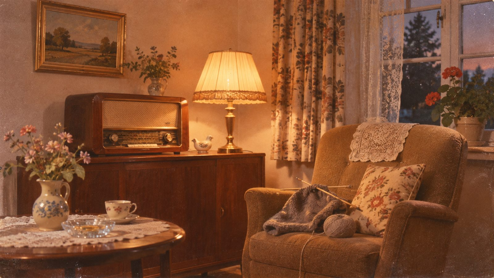

AI-genererede billeder
Søvnguiden
Døgnet rundt · Året rundt ·
Dine nætter
Din søvn. Dine behov.
En god nat begynder længe før, du slukker lyset. Læs guiden her, eller hent den som pdf, så du kan printe den og have den ved sengen.
Hent guiden som pdf (pdf, 7 MB) Gratis · klar til print
Eksperter i god søvn siden 1947
Søvnguiden
Søvnen er mere end det, der sker om natten
En god nat begynder ikke først, når du lægger hovedet på puden. Den hænger sammen med dagens lys og bevægelse, med årstiderne og med dig og dine vaner. Ingen sover ens, og det, der virker for andre, virker ikke nødvendigvis for dig.
Søvnen er ikke et projekt, der skal optimeres. Vælg ét råd, der giver mening for dig, og begynd dér.
Dengang · Mormor fortæller
»Vi talte ikke om søvn. Vi gik i seng, når det blev mørkt, og stod op, når hanen gol. Det var ikke klogt. Det var bare sådan.«
– Mormor
Søvnguiden · VelkommenRingsted Dun
Mød Mormor
Mormor hedder Grethe. Hun er født i 1947 ligesom os og er gift med Henning, som børnebørnene kalder Morfar. Vi har fundet på hende, så hun findes ikke. Hendes nætter minder måske alligevel om nogle, du selv kan huske.
Erfaringen
Mormor
Hendes erindringer og hverdag giver genkendelse og et glimt i øjet.
Viden
Søvnforskningen
Råd fra Sundhedsstyrelsen, sundhed.dk, Ældre Sagen og søvnforsker Birgitte Kornum.
Håndværket
Ringsted Dun
Dyner og puder siden 1947 og blik for den del af natten, der handler om komfort.
Søvnguiden
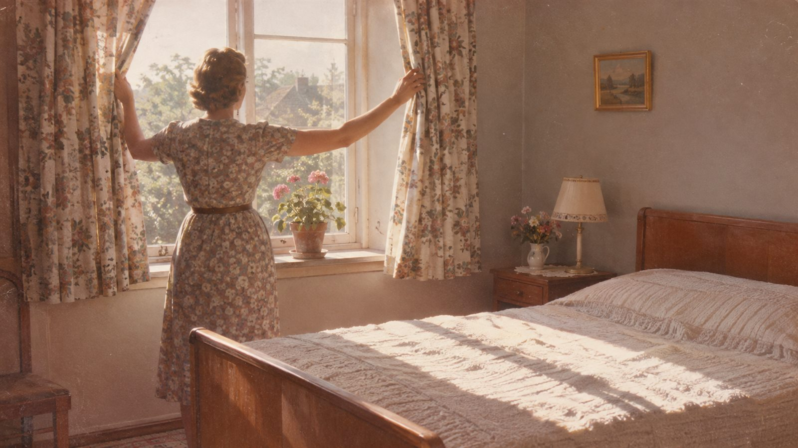
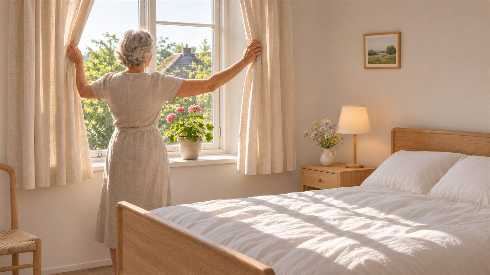
Dengang
Gardinerne trækkes fra.
I dag
Dagslys over den redte seng, 75 år senere.
Begge billeder er AI-genererede.
07.00 Morgen Lys ind, så vågner man
Mormor i dag
»Morfar siger, han er et B-menneske. Det har han sagt i 50 år, og han står op klokken seks.«
Døgnet rundt · 07.00 MorgenRingsted Dun
Dengang · Mormor fortæller
»Far trak gardinerne fra, så snart han var oppe. ›Lys ind, så vågner man,‹ sagde han.«
I dag
En god nat begynder om morgenen
Lys er med til at styre kroppens døgnrytme. Kraftigt lys om morgenen fremskynder den, så du lettere bliver træt om aftenen.
Stå op på samme tid hver dag, også efter en dårlig nat. En fast rytme hjælper søvnen.
Og ryst dynen, så den kan lufte, mens du drikker kaffen.
Prøv det
Tag den første kop kaffe et sted med dagslys, ved vinduet eller ude på terrassen.
Søvnguiden
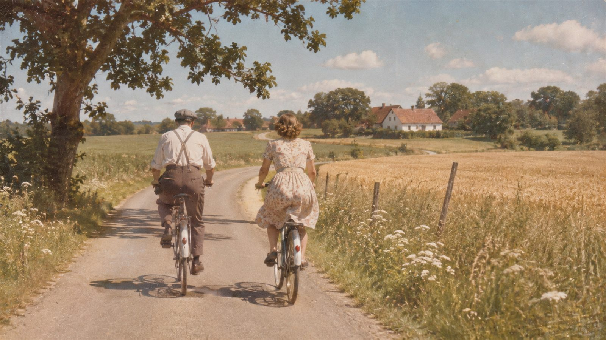
Dengang
Cykelturen ad landevejen.
I dag
Samme tur i dag – nu med hjelm.
Begge billeder er AI-genererede.
14.00 Eftermiddag Træt på den gode måde
Mormor i dag
»En kop kaffe siger jeg aldrig nej til. Men den sidste behøver ikke at blive drukket klokken fire.«
Døgnet rundt · 14.00 EftermiddagRingsted Dun
Dengang · Mormor fortæller
»Vi cyklede overalt. Om aftenen var man træt på den gode måde.«
I dag
Brug kroppen på din egen måde
Vær fysisk aktiv hver dag, fx med en gåtur, havearbejde eller en tur på cyklen. Det giver en naturlig træthed. Nogle sover dog dårligere, hvis de træner tæt på sengetid.
Kaffe og te sidst på dagen kan gøre det sværere at falde i søvn. Alkohol kan gøre det lettere at falde i søvn, men giver ofte mere uroligt og afbrudt søvn.
Og middagsluren? Har du svært ved at sove om natten, så spring den over. Sover du godt om natten, kan en lur sagtens være med, men den tæller med i døgnets timer. Ifølge søvnforsker Birgitte Kornum er en kort lur på cirka 10 minutter nok til at tage toppen af trætheden. En lang lur bør vare cirka 90 minutter, så du når en hel søvncyklus.
Prøv det
Prøv en uge med middagslur og en uge uden. Hvornår sover du bedst om natten?
Søvnguiden
Dengang
Radioen og strikketøjet ved lampens skær.
I dag
Samme stue i dag. Strikketøjet ligger der stadig.
Begge billeder er AI-genererede.
20.00 Aften Skru ned for lyset
Mormor i dag
»Morfar vil lige se vejrudsigten. Og så kommer der altid en udsendelse mere.«
Døgnet rundt · 20.00 AftenRingsted Dun
Dengang · Mormor fortæller
»Om aftenen lyttede vi til radioen ved lampens skær. Så var det sengetid.«
I dag
Lad dagen falde til ro
Kraftigt lys om aftenen forsinker døgnrytmen, så du falder senere i søvn. Dæmp lyset, og læg skærmene væk, både tv, tablet og telefon, gerne et par timer før sengetid.
Spis ikke et stort, fedt måltid lige før sengetid, men gå heller ikke sulten i seng.
Læg arbejde og mails væk de sidste timer før sengetid. Et varmt bad eller en bog af papir kan hjælpe dig til at falde til ro. Og undgå at falde i søvn foran fjernsynet.
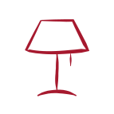
Prøv det
Sluk fjernsynet lidt tidligere i aften, og tænd en lampe i stedet for loftslyset.
Søvnguiden
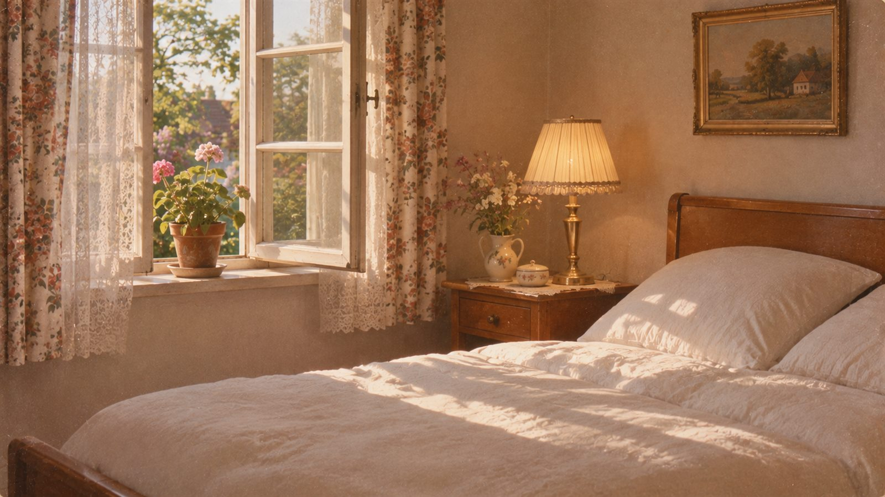
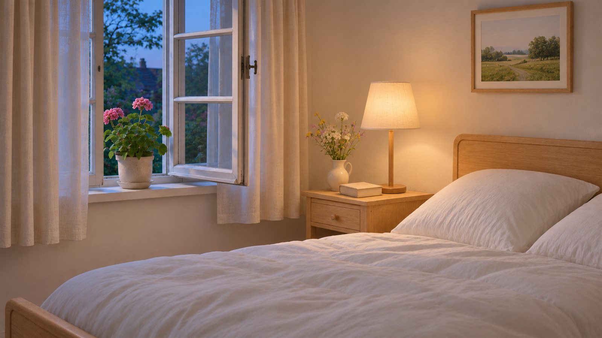
Dengang
Natlampen tændt, vinduet på klem.
I dag
Samme soveværelse i dag. Samme ro.
Begge billeder er AI-genererede.
22.30 Sengetid Køligt, mørkt og stille
Mormor i dag
»Telefonen sover i køkkenet nu. Morfar siger, den savner ham.«
Døgnet rundt · 22.30 SengetidRingsted Dun
Dengang · Mormor fortæller
»Soveværelset var det koldeste rum i huset. Men under dynen var der lunt.«
I dag
Skab de gode rammer for natten
For de fleste er 18–21 grader det bedste. Luft ud, og hold lys og støj ude, fx med mørklægningsgardiner.
Lad telefonen blive udenfor, og brug sengen til at sove i.
Dyne og pude er også en del af helheden. Dynen skal passe til dig og til årstiden og kunne ånde, så du hverken fryser eller får det for varmt.
Prøv det
Mål temperaturen i soveværelset i aften. Hvad viser termometeret?
Søvnguiden
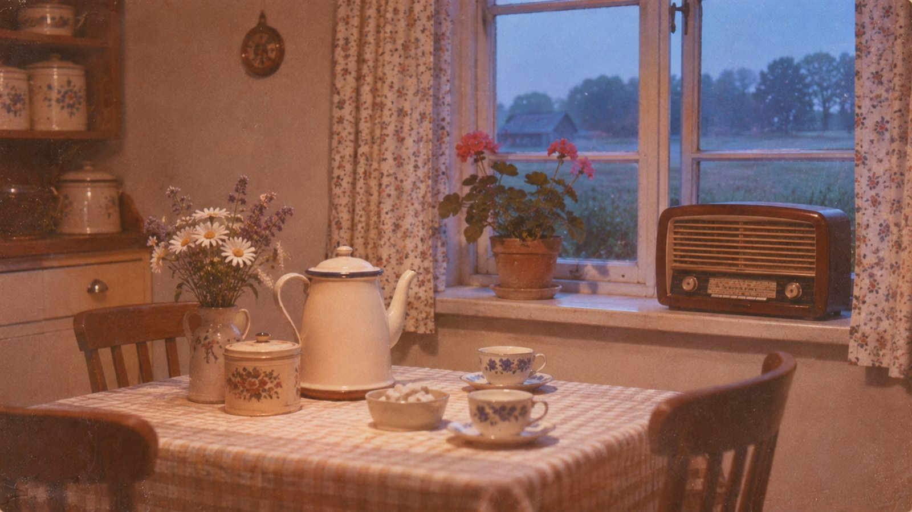
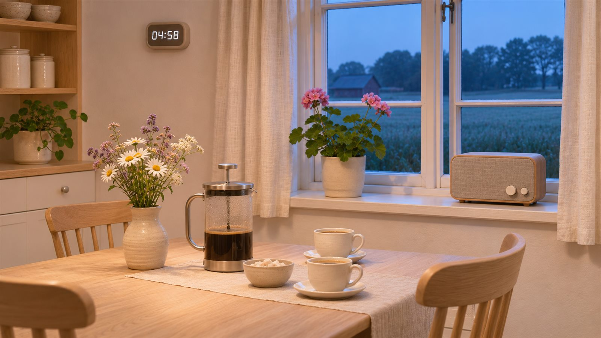
Dengang
Kaffekanden i køkkenet, før de andre vågner.
I dag
Samme køkken i dag. Radioen står der stadig.
Begge billeder er AI-genererede.
04.30 Natten Søvnen er ikke et stopur
Mormor i dag
»Jeg vågner tidligere end før. Så hører jeg morgenradioen og nyder, at huset sover.«
Døgnet rundt · 04.30 NattenRingsted Dun
Dengang · Mormor fortæller
»Mor stod altid op før solen. ›Man skal ikke ligge og tælle timer,‹ sagde hun.«
I dag
Når søvnen forandrer sig
Søvnen forandrer sig gennem livet. Sundhedsstyrelsen anbefaler 7–8 timer i døgnet for voksne over 65, men for nogle kan både 5–6 og 9 timer være passende.
Det er normalt at vågne om natten, og med alderen sker det oftere. Ifølge Birgitte Kornum er det ikke så vigtigt, om du vågner, bare du samlet får nok timer. Kan du ikke sove efter en halv times tid, så stå op, gør noget roligt, og gå i seng igen, når du bliver søvnig.
Bliver søvnbesværet ved, så tal med din læge.
Prøv det
Læg en god bog klar ved sengen i aften, til hvis natten bliver lang.
Søvnguiden
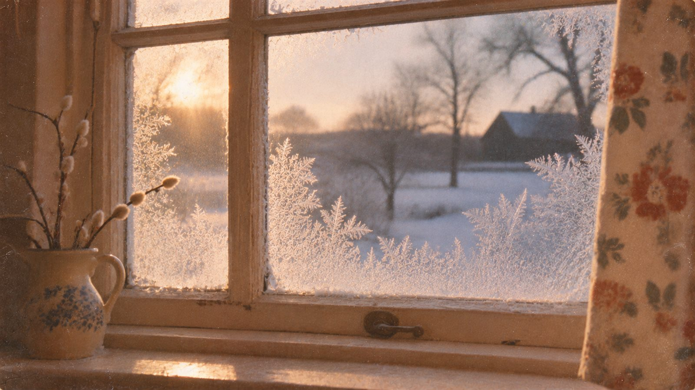
Dengang
Isblomster på ruden.
I dag
Klart glas i dag – samme udsigt.
Begge billeder er AI-genererede.
Året rundt Vinter og forår Søvnen gennem de mørke og de lyse måneder
Året rundt · Vinter og forårRingsted Dun
Vinter Lune nætter i de mørke måneder
Dengang
»Om vinteren var der rimfrost på indersiden af ruden. Så krøb man helt ned under dynen.«
I dag
Selv når det er koldt udenfor, sover de fleste bedst ved 18–21 grader. Lad hellere dynen holde på varmen end radiatoren.
Få dagslys, når det er der. Lys om morgenen hjælper døgnrytmen.
Prøv det
Gå en tur i dagslyset før middag i morgen.
Forår Når morgenerne bliver lyse
Dengang
»Om foråret blev dynerne båret ud og banket. Så var vinteren ovre.«
I dag
Lyse morgener kan vække dig tidligere, end du ønsker. Mørklægningsgardiner kan holde lyset ude.
Og overvej en lettere dyne, når nætterne bliver lunere.
Prøv det
Tjek i aften, om dit soveværelse er mørkt nok.
Søvnguiden
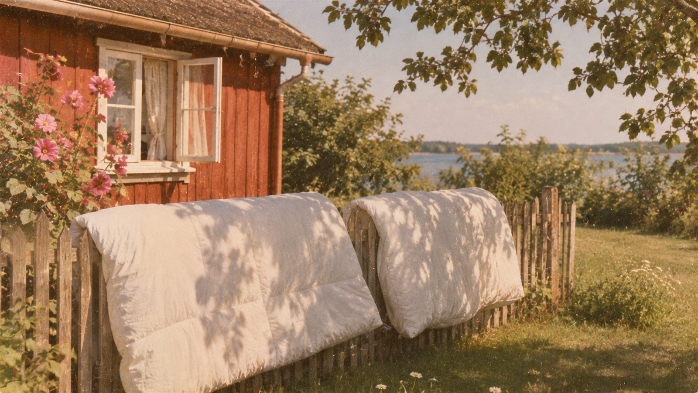
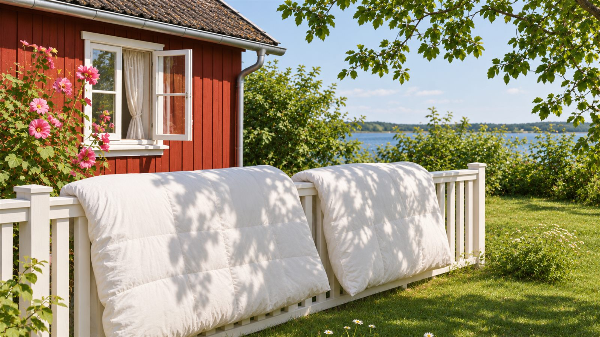
Dengang
Dyner over stakittet.
I dag
Samme sommerhus i dag. Dynerne hænger der stadig.
Begge billeder er AI-genererede.
Året rundt Sommer og efterår Lyse nætter, sommerhuset og den store dynevask
Året rundt · Sommer og efterårRingsted Dun
Sommer Lyse nætter og sommerhuset
Dengang
»I sommerhuset lugtede dynerne af hav og trætte unger. Ingen sov længe, men alle sov godt.«
I dag
Sover du dårligere i sommerhuset end derhjemme? Spørg dig selv: Er her for varmt? Er madrassen god? Passer dynen til årstiden? Er puden for høj eller for lav?
En sval dyne og mørklægning kan gøre de lyse nætter lettere.
Prøv det
Læg dig i sommerhussengen i fem minutter, før sæsonen starter.
Efterår Den store dynevask
Dengang
»Når bladene faldt, var det tid til den store vask.«
I dag
Følg vaskeanvisningen. Som hovedregel kan dyne og pude vaskes ved 60 grader med enzymfrit vaskepulver, og det dræber husstøvmider. Tør dem grundigt i mindst 4 timer, så dun og fjer ikke klumper.
Og når aftenerne bliver mørke tidligere: Få dagslys om dagen, og dæmp lyset om aftenen.
Prøv det
Find vaskeanvisningen på din dyne. Hvornår blev den sidst vasket?
Søvnguiden
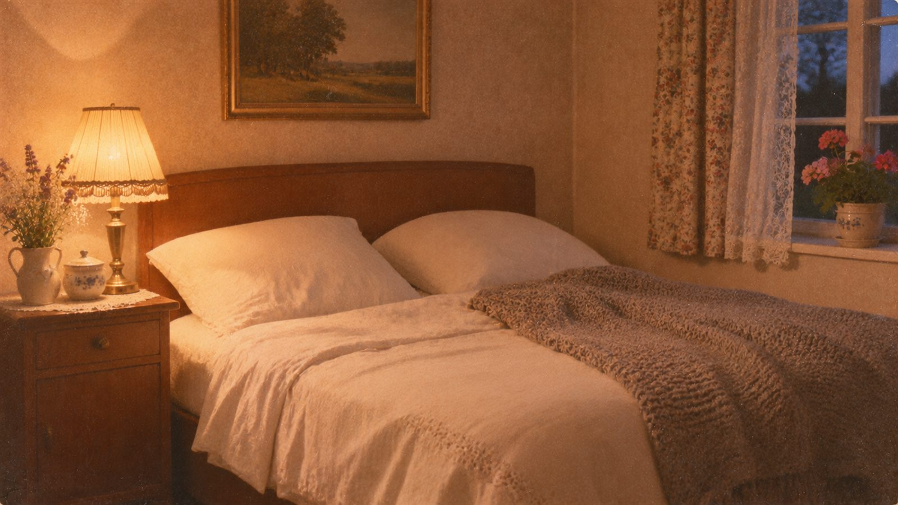
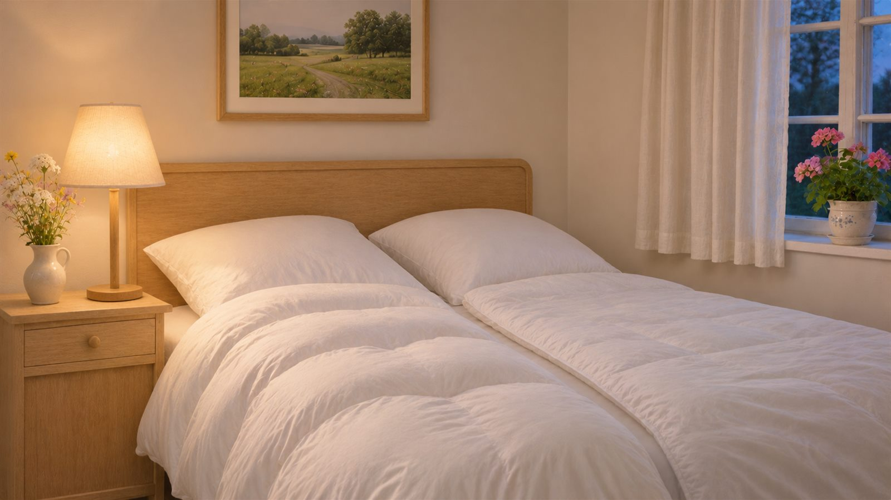
Dengang
Ét tæppe på den ene side.
I dag
Hver sin dyne i sin egen varmegrad.
Begge billeder er AI-genererede.
Dine nætter Din side af sengen Din krop har sin egen temperatur
Mormor i dag
»Vi har to dyner nu. Morfar kalder det moderne. Jeg kalder det fred.«
Dine nætter · Din side af sengenRingsted Dun
Dengang · Mormor fortæller
»Far ville have vinduet på klem. Mor frøs. Så hun lagde sit strikketæppe ovenpå, hver eneste nat.«
I dag
Ingen sover ens. Nogle fryser hele natten, andre smider dynen af. Nogle bevæger sig meget i søvne, mens andre vågner i samme stilling, som de faldt i søvn i. Din krop har sin egen temperatur og sin egen rytme, og den er værd at lytte til.
Fryser du eller får det for varmt, er løsningen ikke altid et tæppe ekstra. Det kan være en dyne i en anden varmegrad, fra ekstra sval til ekstra varm, som passer til dig. Deler du seng med nogen, gælder det samme for dem.
Prøv det
Mærk efter i nat: Fryser du, eller får du det for varmt?
Søvnguiden
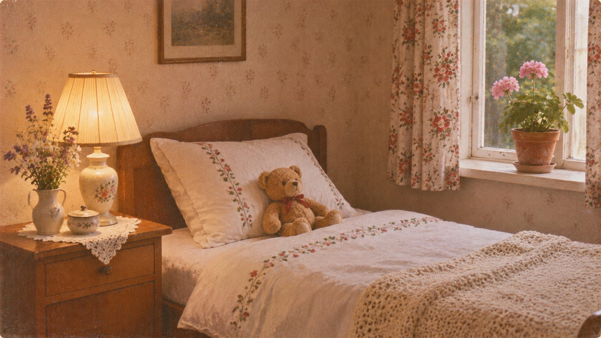
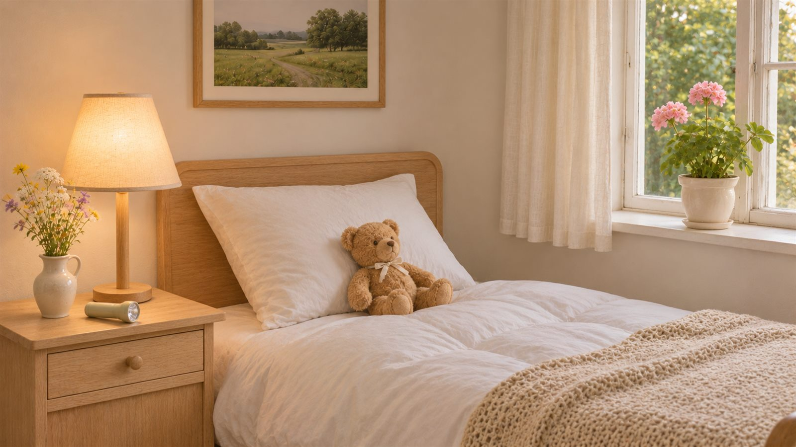
Dengang
Bamsen på gæstepuden.
I dag
Bamsen på puden i dag.
Begge billeder er AI-genererede.
Dine nætter Når børnebørnene sover over Gæstesengen er klar
Mormor i dag
»Barnebarnet siger, at min gæsteseng er den bedste i verden. Jeg tror, det er, fordi hun må læse længe.«
Dine nætter · BørnebørneneRingsted Dun
Dengang · Mormor fortæller
»Når børnebørnene kom, blev gæstesengen redt med det pæneste sengetøj. Det var en lille fest.«
I dag
Børn har brug for endnu mere søvn end voksne, og de sover anderledes. Derfor kan hele familien sjældent nøjes med samme slags dyne og pude.
Giv gæstesengen en dyne, der passer til den, der skal sove i den, og til årstiden. Og hold gerne fast i barnets egne godnatvaner, også hos mormor.
Prøv det
Læg dig i gæstesengen i aften. Hvordan ville du selv sove her?
Dine nætter · Mit søvnkortRingsted Dun
Mit søvnkort
Læs de syv udsagn, og vælg én ting, du vil prøve i den kommende uge. Der er ingen rigtige eller forkerte svar.
- Jeg får dagslys om morgenen.
- Jeg bevæger mig i løbet af dagen.
- Jeg holder øje med kaffe og alkohol sidst på dagen.
- Jeg dæmper lys og skærme om aftenen.
- Soveværelset er køligt, mørkt og stille.
- Jeg sover uden at fryse eller få det for varmt.
- Min dyne og pude passer til mig.
Mormor i dag
»Jeg prøvede det hele på én gang. Det holdt til onsdag. Én ting ad gangen virker bedre.«
Søvnguiden
Meget har ændret sig siden 1947.
Vores nysgerrighed på god søvn
har ikke.
Eksperter i god søvn
Ringsted Dun · siden 1947Til sidst
Vi har lavet dyner og puder i Danmark i over 75 år. Undervejs har vi lært, at gode nætter handler om helheden: dine vaner, dine omgivelser og den komfort, du finder i sengen. Vil du vide, hvordan dyne og pude kan passe til dine nætter, så spørg din Ringsted Dun-forhandler, eller prøv dynevælgeren på ringsted-dun.dk.
Hent guiden som pdf (pdf, 7 MB) Print den, og læg den i skuffen ved sengen.
Kilder
Sundhedsstyrelsen: Anbefalinger for søvnlængde (2024) · sundhed.dk: Gode råd, hvis du har svært ved at sove (pjece, 2025), Gode råd til en bedre søvn og Søvnløshed blandt ældre (Patienthåndbogen, 2025) · Ældre Sagen: 5 gode råd til bedre søvn om natten · Søvnforsker Birgitte Kornum · Ringsted Duns soveguide og plejevejledning.
Mormor er en fiktiv fortæller. Billedparrene af dengang og i dag er AI-genererede. Øvrige fotos er Ringsted Duns egne. Rådene er generelle og erstatter ikke rådgivning fra sundhedspersonale.

ringsted-dun.dk